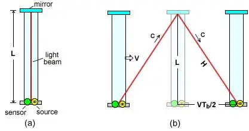

Rad Reletivity — 2026
def of a bAlCK HOLE.
Figure 1 — Caption text goes here.
A black hole is a region of spacetime where gravity is so overwhelming that nothing — not even light — can escape once it crosses the boundary known as the event horizon.
They are not empty voids. They contain enormous amounts of mass compressed into an incredibly small space, bending spacetime so severely that our ordinary physics breaks down at the centre.
Predicted by Einstein's general theory of relativity in 1916 and first directly photographed in 2019, black holes remain one of the most actively studied objects in all of astrophysics.
Figure 2 — Full-width caption. Good place for a dramatic wide image.
Rad Relativity / Relativity
A compleatly reliable and accurate discription of Eienstiens Theory oF Relativity.
The Theory of Relativity is one of the most important ideas in modern physics, developed by Albert Einstein in the early 20th century. It explains how space, time, and gravity work — especially when objects move very fast or when gravity is extremely strong.
Einstein's theory explains that space and time are connected through spacetime, that time is relative depending on motion and gravity, and that mass and energy are related. Both special and general relativity have been tested many times. Relativity is not theoretical.
Disclaimer: All of this is simplified for easier reading and understanding, and is as accurate as possible in this form. — Me, the Author
Covers space and time for objects at constant speeds. No gravity involved.
Extends special relativity to include gravity. Mass curves spacetime.
Special relativity (1905) describes how space and time work for objects moving at constant speeds — no gravity involved. It rests on two postulates:
Imagine you are on a sealed train — no windows, no gaps — travelling at a constant speed. You do not know you are moving. You roll a ball on the floor. It drops to the ground and rolls exactly as it would on solid ground.
From inside, you have no way of knowing how fast the train is moving. Physics behaves identically at any constant speed. The laws of physics are the same in all inertial frames.
This means two observers moving at different constant speeds will each measure the same speed of light — not different values, as classical physics would predict. Einstein's insight was that this forces space and time to be flexible instead.
Length contraction happens when something is moving — but it is only significant at speeds approaching the speed of light. Because space and time are interconnected and the speed of light is constant, the relativity of simultaneity means that light from one end of a moving object reaches an observer at a different time than light from the other end. If you measure the distance between the ends using those arrival times, you get a shorter value. This is the observed length contraction.
$$L = L_0\sqrt{1 - \frac{v^2}{c^2}} = \frac{L_0}{\gamma}$$Mass and energy are two forms of the same thing. A tiny bit of mass equals an enormous amount of energy. And because $c$ is the cosmic speed limit, nothing with mass can ever reach it.
Imagine a ruler and two observers: one standing still, the other moving to the right. A football is thrown to the left. Both measure its speed using their own ruler and clock. The stationary observer measures 50 m/s; the moving observer measures 150 m/s. In classical (Newtonian) physics, both are valid — motion is always relative, and each observer considers themselves "at rest."
Logically then, a stationary observer should measure light at $c$, and a moving observer at $c + 50$ m/s. But Einstein said this is wrong. The speed of light in a vacuum is always the same, regardless of the observer's motion.
To explore the consequences, imagine a light clock — a beam of light bouncing between two mirrors. Seen from inside a moving train and from a stationary observer on the ground, the same clock behaves differently.
For the rider, the photon travels straight up and down. For the ground observer, because the clock moves sideways, the photon follows a longer diagonal path — while still moving at exactly the speed of light.
As a result, the ground observer concludes that less time has passed on the moving clock. A moving clock runs more slowly. This is time dilation.

In the ground frame, the resting clock's light travels straight between mirrors at distance $d$. The time between ticks is the proper time, $\Delta t_0$, where $d = c(\Delta t_0/2)$. This distance is perpendicular to the motion, so $d$ is the same in every reference frame.
For the moving clock, the photon traces a diagonal path of length $S = c(\Delta t/2)$, while the clock moves sideways $L = v(\Delta t/2)$. The lengths $d$, $L$, and $S$ form a right triangle. Applying the Pythagorean theorem and solving:
$$\Delta t = \gamma\,\Delta t_0 \qquad \gamma = \frac{1}{\sqrt{1 - v^2/c^2}}$$The moving clock's tick interval $\Delta t$ is longer than the proper time $\Delta t_0$ — the moving clock runs slow. The Lorentz factor $\gamma$ is always $\geq 1$.
Proper time is the time measured by a clock present at both events in the same location — essentially the time in the frame where the clock is at rest. It is always the shortest possible elapsed time between those events.
Muons are created when cosmic rays — high-energy particles from space, which you should have learned about from science — strike nuclei in the upper atmosphere. At rest, a muon's average lifetime is about 2.2 microseconds; far too short to travel the ~18 km to sea level before decaying.
Logically, muons should never reach the ground. Yet many are observed at sea level, confirmed by experiments on Mount Washington. Using the time dilation formula, their lifetime as seen from Earth can be about ten times longer than their proper lifetime — enough to travel several kilometres and reach the sensors.
The twin paradox: one twin stays on Earth while the other travels at high speed to a distant star and returns. From Earth's frame, the traveling twin's clock runs slow — the traveler returns younger.
From the traveler's view, Earth seems to move, so Earth's clocks appear slow too. Paradox?
The resolution: the traveling twin changes inertial frames at the turnaround — they experience acceleration. The Earth-bound twin does not. When the traveler switches frames, Earth's time coordinate "jumps" forward in the new frame. Over the whole journey, this frame-switching creates a larger total elapsed time for Earth. When they reunite, the traveling twin is much younger.
1915 — Extends special relativity to include gravity. Instead of thinking of gravity as a force pulling objects, mass and energy curve spacetime, and objects move along the curves.
Imagine a single spherically symmetrical object — non-rotating and electrically neutral — alone in an empty universe. Release a ring of stationary particles around it (far away). The particles gradually speed up towards the object until they reach it.
Release more and more streams until you have a uniform flow all accelerating toward the object. Now, instead of particles, think of it as spacetime itself flowing like a river into the object, carrying anything in its path. That is how gravity actually works.
Free fall — like an orbiting planet or a dropped object — is actually the object moving along the "straightest possible path" (a geodesic) in curved spacetime. There is no force pulling it. The path itself is curved by nearby mass.
Every object is already moving through time. Spacetime warping converts that temporal motion into spatial motion — pulling things toward massive objects.
We cannot create a perfectly correct visual for general relativity for one key reason: it includes a fourth dimension. Instead of a spatial dimension, Einstein's theory includes time as the fourth dimension. We can make useful 3D approximations — but they are always approximations.
The sheet visualisation: imagine a perfectly flat, infinitely stretchy sheet with a grid network. Place a large steel ball and a small ping pong ball on it. The steel ball creates a large curve; the ping pong ball rolls toward it, picking up speed.
Now roll the ping pong ball in from the side — it spirals briefly and hits the steel ball. The sheet is spacetime. The steel ball is a planet. The falling ping pong ball is an object under gravity; rolled from the side, it is an orbiting object.
If you shoot the ping pong ball from a massive distance with enormous speed, it whizzes past without orbiting. Control that energy and it enters a stable orbit that decays much more slowly. *You need a lot of speed, but maybe not THAT much.*
A more accurate visualisation uses a full 3D grid or net representing spacetime, pulled and contracted toward the central object — better showing the "river" effect. The full 4D version (including time) cannot yet be perfectly visualised. The most popular 4D approximation is a cube inside a cube with connected vertices.
To look at gravitational time dilation, we look at the Schwarzschild Solution — the spacetime geometry around a single, spherical, non-rotating, uncharged mass. We do not need a big new equation; the time dilation factor is already inside it.
$$ds^2 = -\!\left(1 - \frac{2GM}{c^2 r}\right)c^2\,dt^2 + \left(1 - \frac{2GM}{c^2 r}\right)^{-1}dr^2 + r^2\,d\Omega^2$$The highlighted term $\left(1 - \frac{2GM}{c^2 r}\right)$ appears in the metric's time component. Take its square root to get the gravitational time dilation factor:
$$\text{Grav. TD Factor} = \sqrt{1 - \frac{2GM}{c^2 r}}$$Compare the two time dilation factors side by side:
$$\text{Velocity TD:} \quad \sqrt{1 - \frac{v^2}{c^2}}$$ $$\text{Gravity TD:} \quad \sqrt{1 - \frac{2GM}{c^2 r}}$$Both share the form $\sqrt{1 - (\,\cdot\,)/c^2}$. Equating the inner terms gives:
$$\frac{2GM}{r} = v^2$$This shows that gravitational time dilation and velocity-based time dilation are the same phenomenon, and gives an equation to substitute between them.
Because the speed of light is always constant, time moves more slowly for you to compensate — so the speed of light remains constant from your perspective too. This is why time dilation exists.
Because of this, there is no single "true" time — it is all relative. Some claim the "true" time is measured in a space without any influence from gravity or velocity. This obviously cannot happen in our ever-expanding universe, because everything is under some form of gravitational influence.
Time is relative. Clocks lie. Gravity bends everything — including the passage of time itself. — Summary
Rad Relativity / NON-ROTATING BLACK HOLES
Now, as you know at this point, Black holes are objects that form under intense conditions in which matter is compressed into a single point, becoming so dense that, from a certain distance, not even light can escape. As we have said a couple of times now, time stops at the horizon, but unlike what Einstein thought, things can still enter the black hole. But what happens when you go into a Black hole? What happens when you reach this singularity?
Now, an outside observer would see time stop for the person entering the hole. As the person got closer and closer, time would slow down more and more, the movement would become slower and slower, and then when they reached the black hole. They stop. They are frozen at the event horizon of the black hole, and they slowly undergo a process called redshift. Their body would become redder, and redder as it leaves the visible light spectrum, shifting to infrared, to microwaves, to radio waves, and finally out of view from any of our technology. But why does this happen? By slowing down time, their light waves get stretched into lower wavelengths. This happens before Spaghettification even happens, the gravity changes just enough in two areas to provide an almost pre-Spaghettification for very tiny objects, as the wavelength loses energy. To understand why an outside observer would see everything freeze at the horizon, we will need to understand light cones.
Imagine you are in empty space and a flash of light emanates from your head, causing an ever-expanding sphere where the light was now, because nothing can travel faster than light. Everything that will ever happen to you will happen inside this bubble. We can cut down space to two dimensions and add time as an up and down dimension. What results is, as you move through time, or upwards through it, light spreads away, resulting in a cone on our graph. If we simplify this further, cutting the space down to just one dimension, distance, we get our light cone.
Now, if you have two events in time, anywhere in time, but one is the “you” part of the light cone, the point in time where the cones converge, and one is out of the light cone. They could not have affected each other. You see, events can only affect each other, or influence each other, if they are in each other's light cone. But if you are near a mass where spacetime is curved, you need to take into account the geometry and must therefore use Einstein’s equations to determine the spacetime curvature.
Fig. 8 — M87*, the first black hole ever photographed. April 10, 2019.
Now that you know this, we can explain why the math proved that nothing could enter a black hole. This is a spacetime diagram where r=0 is the singularity, when the radius is 0, and r=2M is the event horizon, and since the black hole isn’t moving, time moves straight up. Now, if we draw incoming and outgoing light rays and see how they travel, we see that your future light cones point at 45° angles, and as we get closer to the event horizon, they start becoming narrower and narrower, as the distance that light can travel away, becomes less and less, until they point straight up at the event horizon, before pointing left towards the singularity after that. Now you might notice something strange about these incoming light rays. They never reach r=2M and instead asymptote at it as time goes to infinity. Yet they come back down and go towards the singularity, as they are mathematically connected. At this point, you might start to recognise the problem. Let's have someone falling into the black hole. Connor, as we will name him, would be forever trapped at the event horizon.
This troubled Einstein and many other scientists deeply, because how could a black hole form if nothing could ever enter it? Oppenheimer proposed a solution to this problem by saying that, to an outside observer, nothing can be seen entering, but if you were the one traveling in, you would pass through it.
Fig. 9 — Intermediate black hole caption.
If you haven't realized so far, the problem was the light cones. Look back at the previous graph. The light travels the same distance going away and into the black hole. The light is being slowed down in all directions. To change this, we need a modified equation.
This changes the graph so that it is accurate to what happens to the light. If you see, the light cones tip inward, a very important detail that will explain later events.Now, this shows that there isn’t a physical object at the event horizon, and what we saw was just a poor choice of a coordinate system and perspective.
If you change the black hole graph so that all of the incoming and outgoing light rays travel at 45 ° angles, then the singularity would get this curve, and you would see that the singularity becomes a moment in time instead of a place in space, explaining why the light cones tilted inwards after they crossed r=2M. This is called a Kruskal Diagram.
The problem with this graph is that it shows a very limited view of the universe, the black hole, and space near the event horizon. But what if we somehow could shrink the whole universe onto one page?
Fig. 9 — Intermediate black hole caption.
Hypothetical black holes formed in the first moments after the Big Bang, when density fluctuations were so extreme that regions of space collapsed before any star had ever formed. They could have any mass — from subatomic to millions of solar masses.
Primordial black holes are one of the leading candidates for dark matter. If they exist in sufficient numbers, they could explain the invisible mass that holds galaxies together.
Fig. 10 — Primordial black hole caption.
Rad Relativity / Learn
A plain-language guide to the physics of black holes — how they work, why they exist, and what they tell us about space and time.
The Schwarzschild radius defines the size of a black hole's event horizon. It is calculated as $r_s = \frac{2GM}{c^2}$, where $G$ is the gravitational constant, $M$ is the mass, and $c$ is the speed of light.
Crucially, any object can theoretically become a black hole if compressed within its own Schwarzschild radius. For Earth, that's roughly 9 millimetres — the size of a marble. For the Sun, about 3 kilometres.
Fig. 11 — Schwarzschild radius diagram.
Predicted by Stephen Hawking in 1974, Hawking radiation arises from quantum effects at the event horizon. The quantum vacuum is filled with virtual particle-antiparticle pairs that constantly appear and annihilate. Near a black hole's horizon, one particle can fall in while the other escapes — allowing the black hole to slowly lose mass over time.
The temperature of this radiation is $T_H = \frac{\hbar c^3}{8\pi G M k_B}$ — meaning smaller black holes are hotter and evaporate faster. A black hole the mass of the Sun would take roughly $10^{74}$ years to fully evaporate — vastly longer than the current age of the universe.
"Not only does God play dice, but he sometimes throws them where they cannot be seen." — Stephen Hawking
General relativity predicts that time passes more slowly in stronger gravitational fields. Near a black hole, this effect becomes extreme. The proper time experienced at radius $r$ relative to a distant observer runs at a rate $\frac{d\tau}{dt} = \sqrt{1 - \frac{r_s}{r}}$ — which tends to zero as $r \to r_s$. Time effectively stops at the horizon from the outside perspective.
This is not a metaphor — it is a real, measurable effect. GPS satellites must correct for gravitational time dilation every single day. Without these corrections, GPS systems would accumulate errors of roughly 10 kilometres per day.
Fig. 12 — Time dilation near a massive object.
When two massive objects such as black holes orbit each other and eventually merge, they create ripples in the fabric of spacetime itself — gravitational waves. These travel at the speed of light and stretch and compress space as they pass.
On September 14, 2015, the LIGO detector recorded the first direct detection of gravitational waves — the signature of two stellar black holes merging 1.3 billion light-years away. The signal lasted less than a second but confirmed one of the last major untested predictions of general relativity.
John Michell proposes that a sufficiently massive star could have an escape velocity exceeding light — he calls them "dark stars."
Einstein publishes general relativity, providing the mathematical framework that makes black holes inevitable.
Karl Schwarzschild, writing from the WWI front lines, derives the first exact solution to Einstein's equations — defining what we now call the Schwarzschild radius.
John Wheeler uses the term at a New York lecture, replacing the unwieldy "gravitationally completely collapsed object."
Stephen Hawking predicts that quantum effects cause black holes to slowly radiate energy and lose mass over time.
The Hubble Space Telescope confirms a supermassive black hole at the centre of galaxy M87, observing gas rotating at over 550 km/s.
LIGO detects waves from two merging stellar black holes 1.3 billion light-years away — confirming general relativity and opening gravitational wave astronomy.
The Event Horizon Telescope releases the first photograph of a black hole — M87* — 55 million light-years away.
The EHT images Sgr A*, the supermassive black hole at the centre of our own Milky Way, just 27,000 light-years away.
The word "hole" is deceptively simple. It implies an absence — an emptiness carved into the fabric of space. But a black hole is not empty. It contains everything that ever fell into it, crushed beyond the reach of any force we know, compressed to a point where spacetime itself breaks down.
The "hole" is really a region. A sphere of spacetime from which there is no exit. Cross the event horizon — the surface of no return — and every direction you could travel, every future you could have, points only one way: inward. Not because something is pulling you. Because inside a black hole, inward is the only direction time flows. You cannot avoid the singularity any more than you can avoid next Tuesday.
For a non-rotating (Schwarzschild) black hole, the interior is startlingly simple. There are no walls. No floor. Just a region of increasingly warped spacetime that ends at the singularity — a point where the curvature of spacetime becomes infinite. Every physical quantity — density, temperature, tidal force — diverges to infinity there.
For a rotating black hole (the Kerr solution, which describes real astrophysical black holes more accurately), the interior is far stranger. The singularity is no longer a point but a ring. And the mathematics suggests — though cannot confirm — the existence of regions where time travel might theoretically be possible, or where passage to other regions of spacetime cannot be ruled out. These are extraordinary claims that general relativity raises but cannot resolve without a theory of quantum gravity.
What we know for certain is this: once inside the event horizon, you are causally disconnected from the rest of the universe. Nothing you do, say, or signal can ever reach the outside again. You are in a place that is, by definition, beyond the reach of physics as we observe it.
"Inside a black hole, the roles of space and time are exchanged. The singularity lies in your future, not in some particular place." — Kip Thorne, Black Holes and Time Warps
Here is the deepest problem the "hole" creates. Quantum mechanics insists that information — the complete description of a physical state — can never be destroyed. It can be scrambled, encoded, transformed, but the total information content of the universe must be conserved.
Black holes seem to violate this. Matter falls in. The black hole slowly evaporates via Hawking radiation, which appears to carry no information about what fell in — it is purely thermal, structureless. When the black hole is gone, where did the information go? Was it destroyed? Is it somehow encoded in the radiation after all? Does it escape through some quantum channel we haven't discovered?
This is the black hole information paradox, and it sits at the intersection of quantum mechanics and general relativity — the two great theories of modern physics that we have not yet managed to reconcile. Solving it may require a fundamental revision of one or both. It is, by many physicists' judgement, the most important unsolved problem in theoretical physics today.
The paradox is sharpened by the Bekenstein–Hawking entropy formula:
$$S_{BH} = \frac{k_B\, c^3\, A}{4\, G\, \hbar}$$Where $A = 4\pi r_s^2$ is the area of the event horizon. This says a black hole's entropy — the amount of hidden information it contains — scales with its surface area, not its volume. This is the seed of the holographic principle: the idea that all the information inside a volume of space can be encoded on its boundary surface. If true for black holes, perhaps it is true of the universe itself.
The hole in a black hole, then, is not a hole at all. It is an answer we cannot yet reach.
Rad Relativity / Data
Key measurements, physical constants, and a reference directory of notable black holes.
Fig. 13 — Physics reference image caption.
The equations that govern black holes, rendered in full. Hover any inline equation to see it in context. All notation follows standard relativistic conventions where $c = G = 1$ unless stated.
$$r_s = \frac{2GM}{c^2}$$| Name | Type | Mass (M☉) | Distance | Notable for |
|---|---|---|---|---|
| Sgr A* | Supermassive | ~4,000,000 | 26,000 ly | Centre of the Milky Way |
| M87* | Supermassive | ~6,500,000,000 | 55 million ly | First black hole ever photographed |
| TON 618 | Supermassive | ~66,000,000,000 | 10.4 billion ly | One of the most massive known |
| Cygnus X-1 | Stellar | ~21 | 7,200 ly | First confirmed stellar black hole (1971) |
| GW150914 remnant | Stellar | ~62 | 1.3 billion ly | First LIGO gravitational wave source |
| V404 Cygni | Stellar | ~9 | 7,800 ly | Most active X-ray binary in Milky Way |
| HLX-1 | Intermediate | ~20,000 | 290 million ly | Best intermediate-mass BH candidate |
| Holm 15A* | Supermassive | ~40,000,000,000 | 700 million ly | Among the largest ever measured |